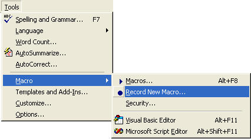
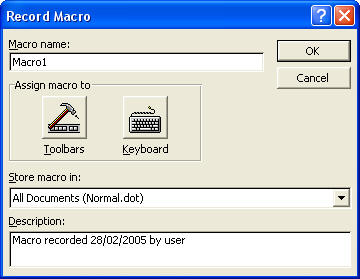
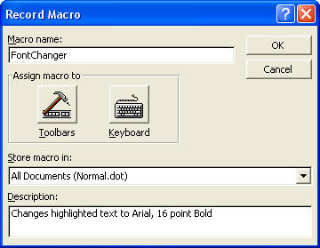
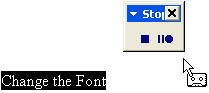
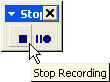
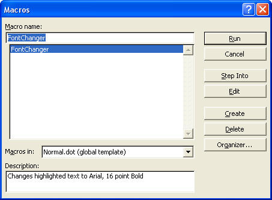

Free
computer Tutorials
|
Free
computer Tutorials
|
|
 home home |
|
||||
How to Create a Microsoft Word MacroIn the previous section, you learned that a Macro is a shortcut to something you do a lot. In this part, you'll learn how to create your own Macros. The simple macro we're going to create will do the following:
Let's get started.
 When you click on Record New Macro, you get the Macro dialogue box popping up. It looks like the one below:  There are four areas to the Record Macro dialogue box: Macro Name, Assign macro to, Store macro in, and Description. The first thing to do is to give your macro a name. At the moment it is called "Macro1". That's not a very descriptive name for what we want our macro to do. We'll call our macro FontChanger. Notice that we haven't put a space between the two words. This is because macros don't like having spaces between words. You have to put the name of your macro as all one word. So go ahead and type in FontChanger as the Macro name, instead of Macro1. The next section is "Assign macro to". You are given the choice of either Toolbars or Keyboard. Ignore this section for now. We'll see later how to assign our macro to a toolbar, and to the keyboard. The next section is "Store macro in". At the moment it reads All Documents (Normal.dot). Remember what Normal.dot is? That's the basic template for all Microsoft Word documents. In other words, the macro we create will be available to any new Word document. You can change this so that the macro is created in only the document you're working on. Click the black down arrow to see the title of the document you have open. The final section is Description. This is just a record of when the macro was created, and who created it. You can change this to anything you like. Malicious folk creating nasty macros will definitely change these details. Once you have given your macro a name, click the OK button. Your dialogue box will look like this:  When you click the OK button, you are returned to your Word document. But now you will see a strange toolbar floating over your page. And the mouse pointer will be different. Your page will look like this:  The reason the little floating toolbar says Stop is because your macro is already being recorded. The process has started. You don't have to panic, and hurry it along. Take your time and think about what you're going to do. The floating toolbar, though, has only two buttons. The square one is the stop button; the two lines and the circle is the pause button. Notice that the mouse pointer has changed, with a little cassette tape on the end of it. This indicates that you are recording a macro. One thing you can't do with a macro is record mouse movements. If you want to move your cursor somewhere in your text, you'll have to use the arrow keys on your keyboard. But the movement of the cursor then becomes part of your macro. For our macro, because we highlighted the text before recording, we don't need to move the cursor. Whatever we do from now on will become part of our macro.
If you make a mistake during the recording of your macro, and everything goes horrendously and badly wrong, you can abort the recording and try again. To abort your recording and try again, do the following:

If nothing went wrong, you will now have a macro. So how do you get at it? To use your new macro, do the following
 Select the Macro that you want, then click the Run button at the top right of the dialogue box. As you can see, the macro we created is in the list, and already highlighted. When the Run button is clicked, the dialogue box will disappear, and the highlighted text will change to Arial, Bold 16 points. You might argue that by clicking on Tools > Macro > Macros, and then fiddling about with the dialogue box is not exactly a shortcut. Surely it's just as easy to click on Format > Font, and make your changes from there?
The makers of Microsoft Word fully agree with that argument. That is
why they give you the option to access your shortcut from the toolbar
or the keyboard. We'll see how to do that now. Learn how to assign a Macro to the Keyboard --> |
|||||
|